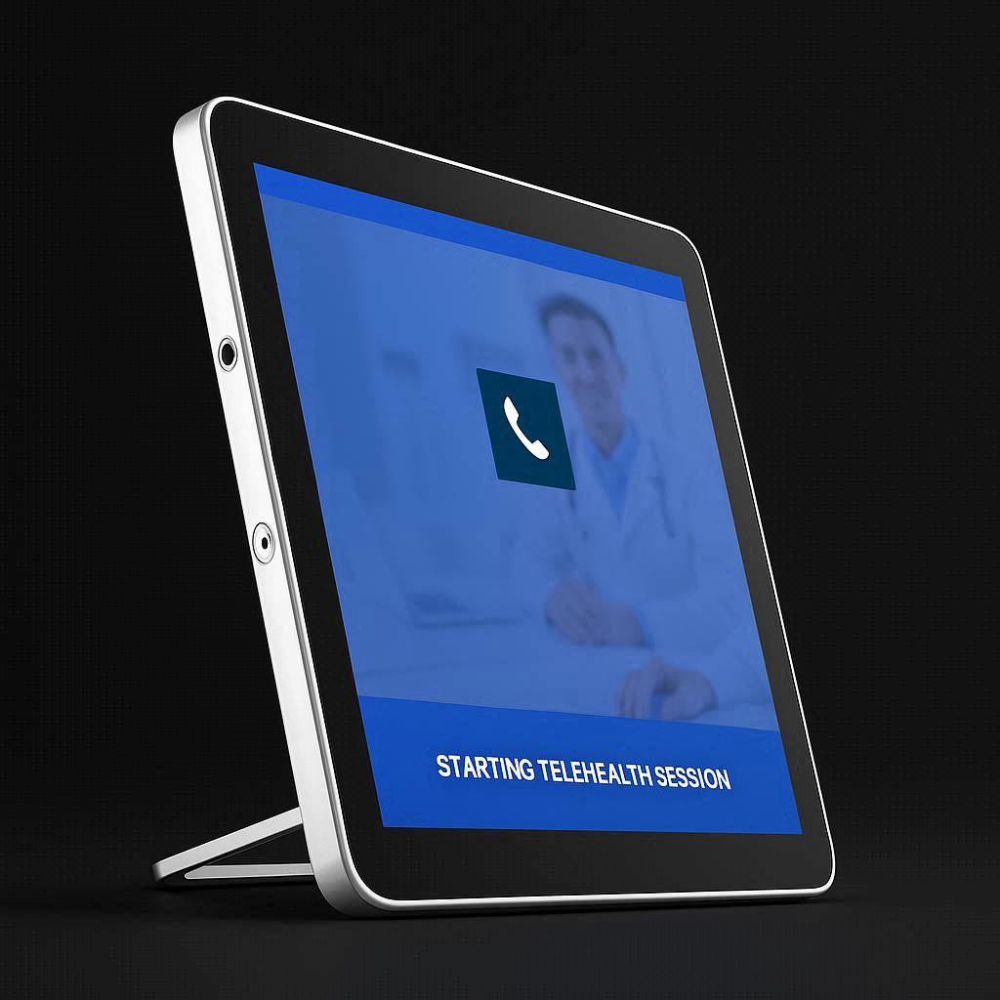
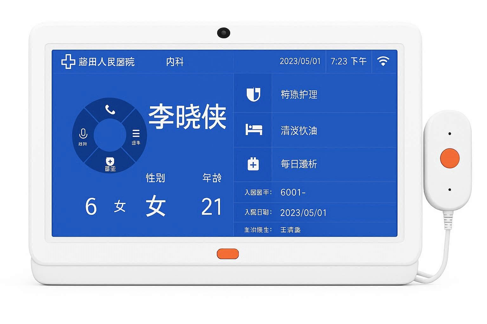
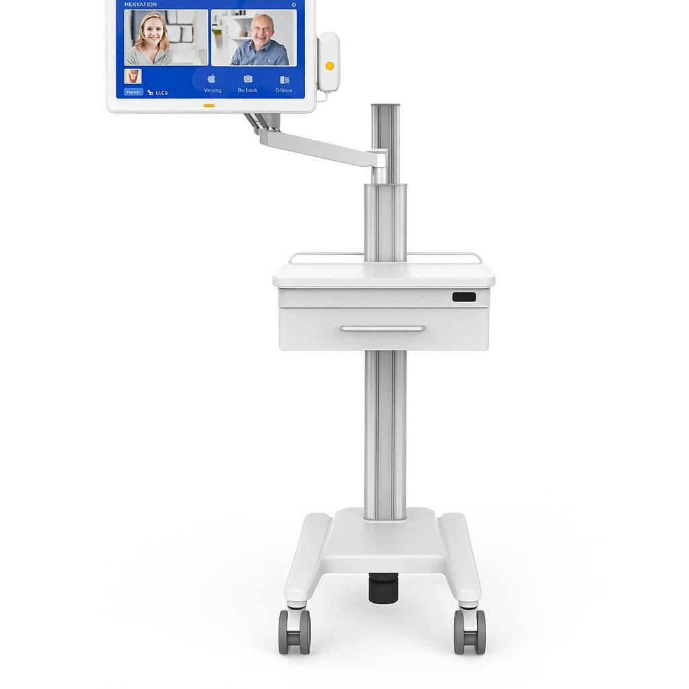
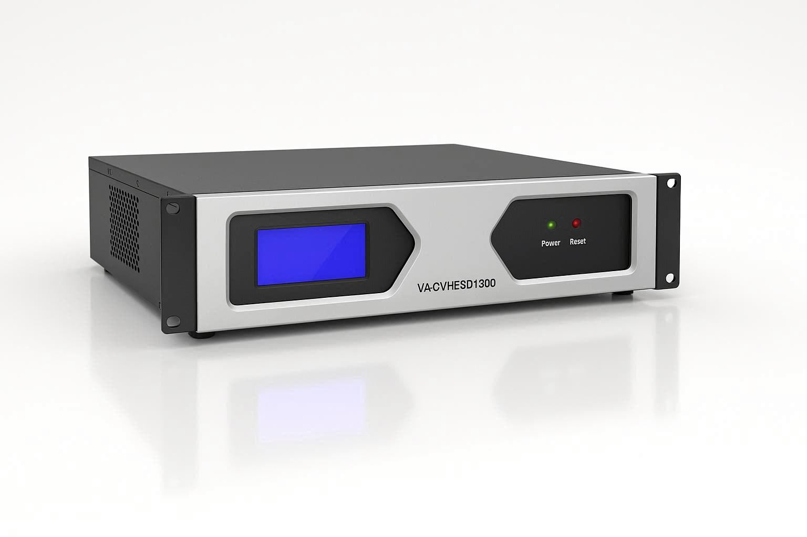

适用于ICU重病房病人与家属之间的探视对讲，也可适用于其它需要隔离探视对讲场所。通过可视对讲、录音录像、远程探视等功能，既满足家属探视需求，又有效控制感染风险。
探视分机、病床分机自带摄像头，支持双向可视对讲。家属呼叫后由护士站主机转接至病床分机，实现安全有序的探视流程。

系统支持对通话过程进行录音录像，记录呼叫、通话时间。VA探视系统提供远程探视功能，授权家属可随时随地探访患者。

ICU探视对讲系统配套设备

